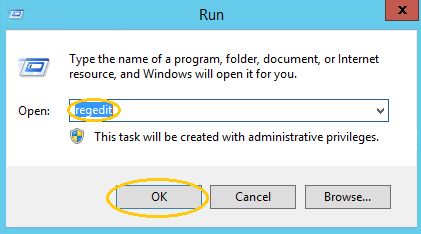
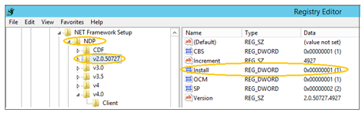

Additional Prerequisites and Requirements for 2012 and 2008 R2
template('MindTouch/Controls/PageOverview');
2012 and 2008 or R2
Microsoft® .NET Framework
- Select Start > Run.
- Enter ‘regedit’ and OK .

- Navigate to the NDP node in the ‘Registry Editor’: (HKEY_LOCAL_MACHINE >Software >Wow6432Node>Microsoft >NET Framework Setup> NDP)
- Select v2.0.5.727.
- Verify .NET 4.0 is installed.
- (HKEY_LOCAL_MACHINE >Software >Wow6432Node>Microsoft >NET Framework Setup> NDP>v4.0)

Supporting Microsoft® References:
http://msdn.microsoft.com/en-us/kb/kbarticle.aspx?id=318785
http://msdn.microsoft.com/en-us/library/hh925568.aspx
Page tags: article:topicRoom Signs Using ExchangeRoom Signs Using Exchange Additional Requirementspersona:UserFacilitiesMgr